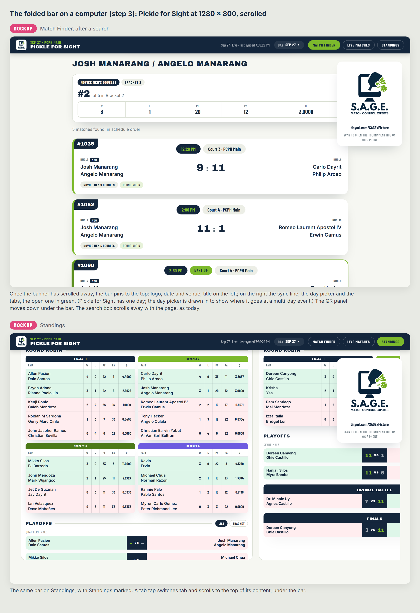
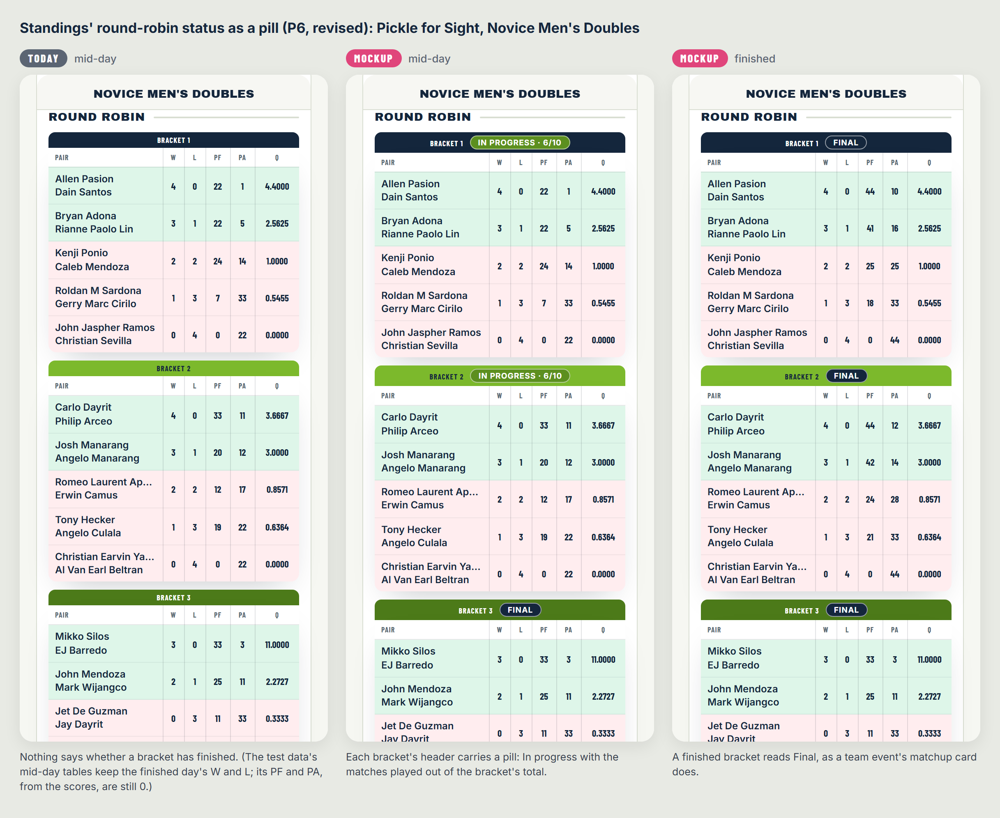
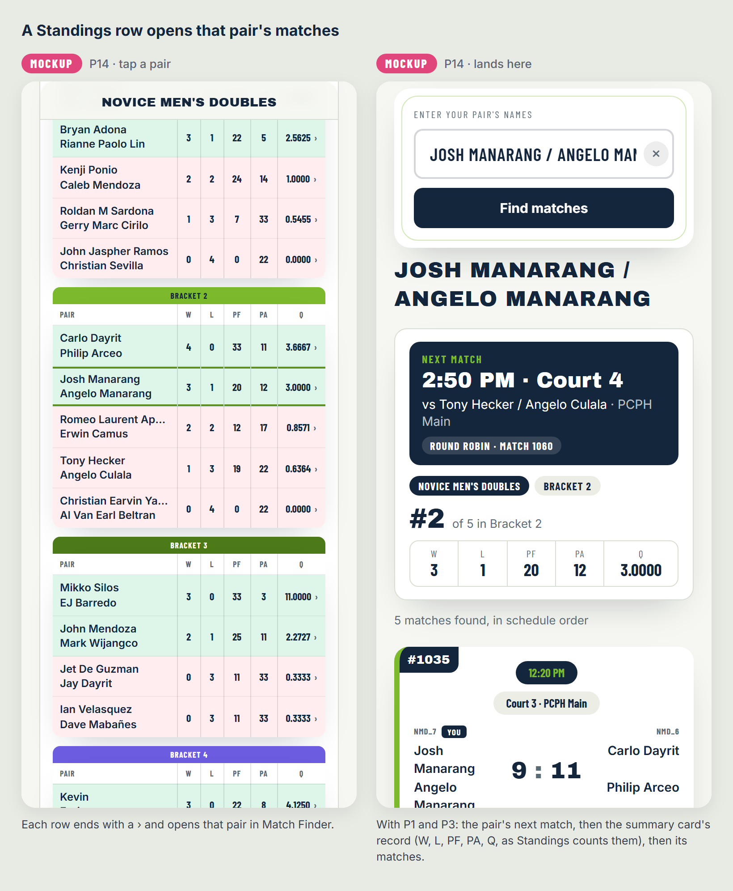
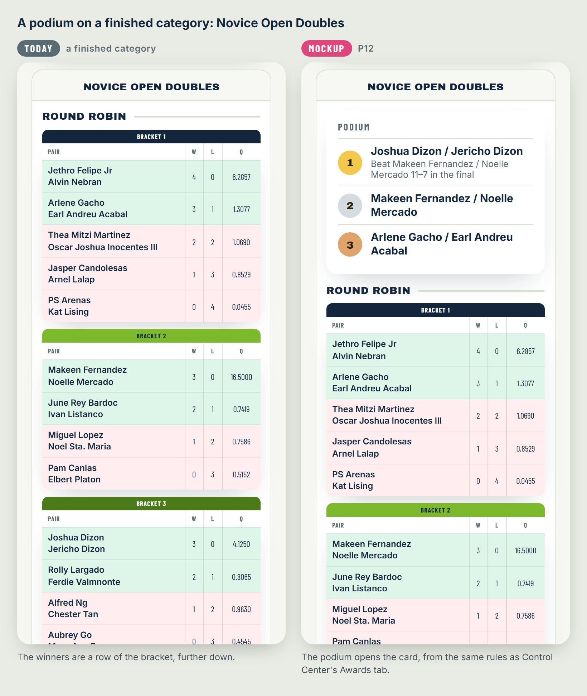
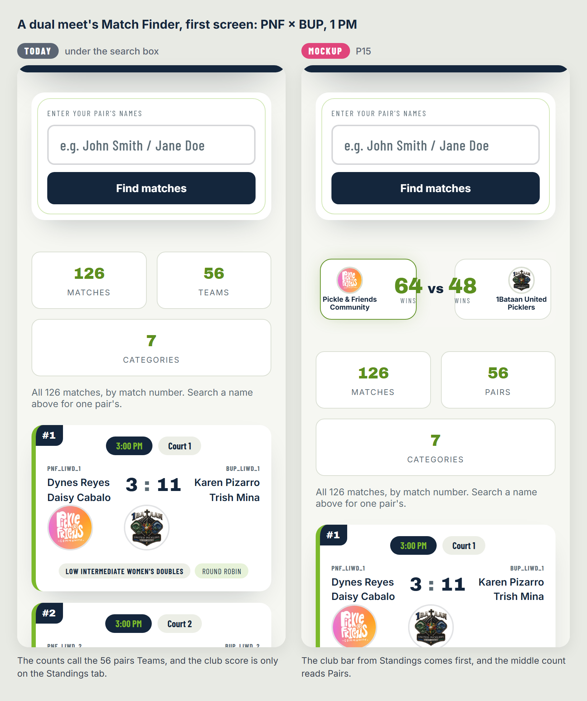
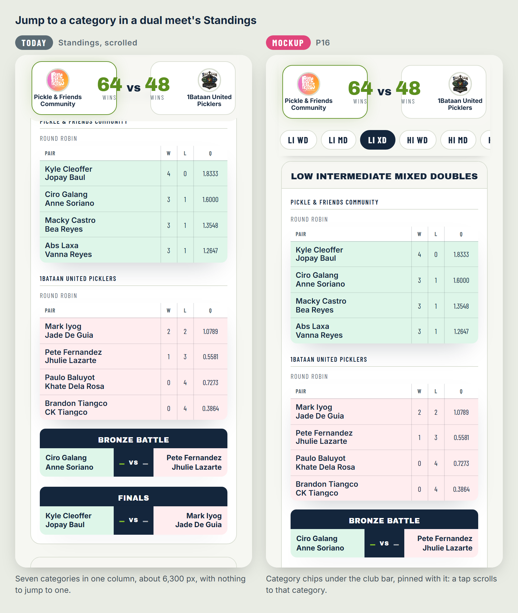
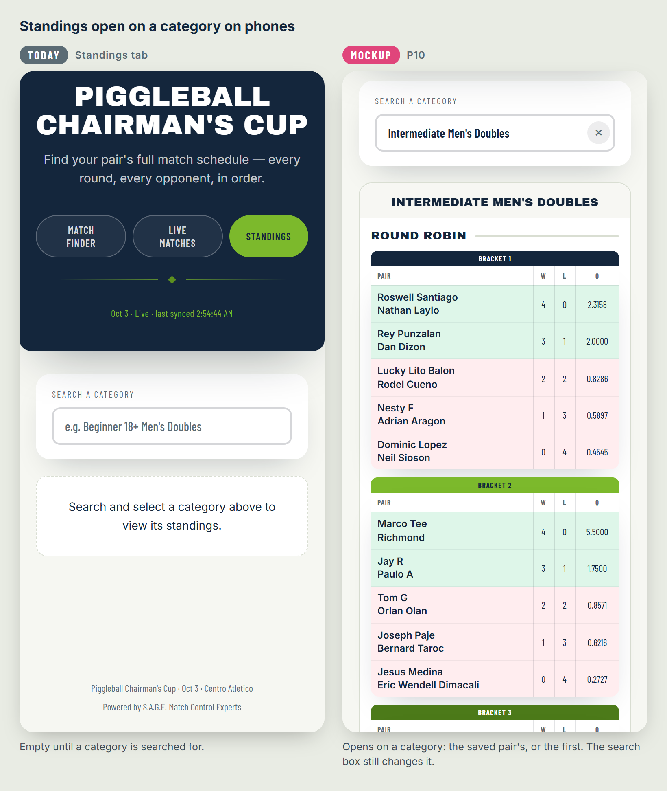
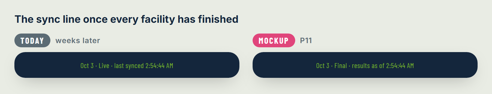
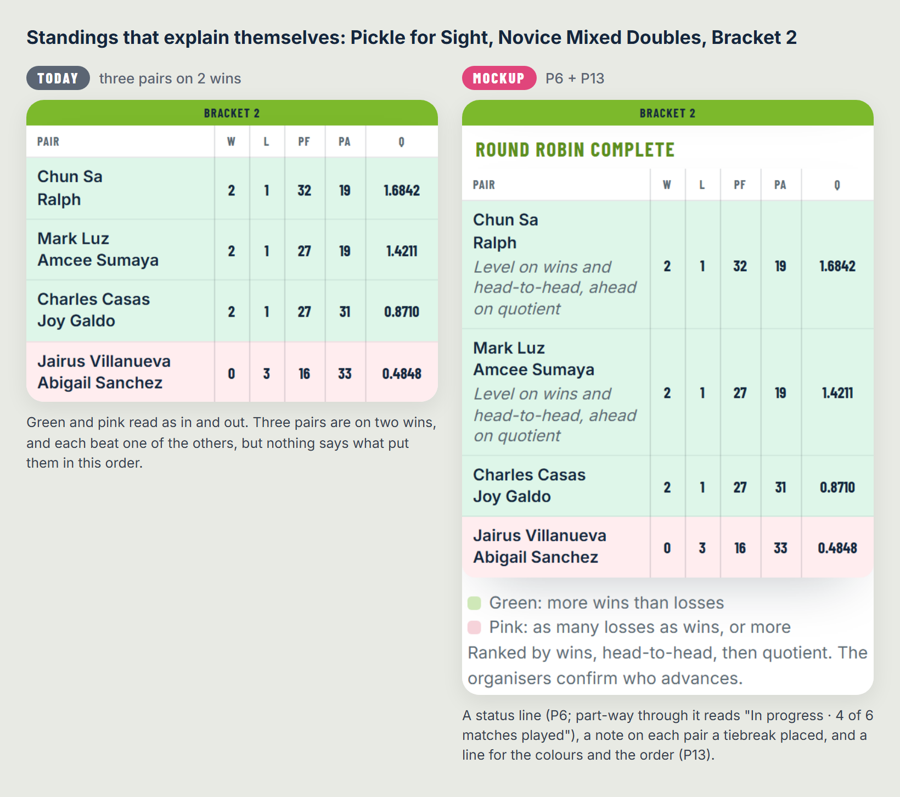
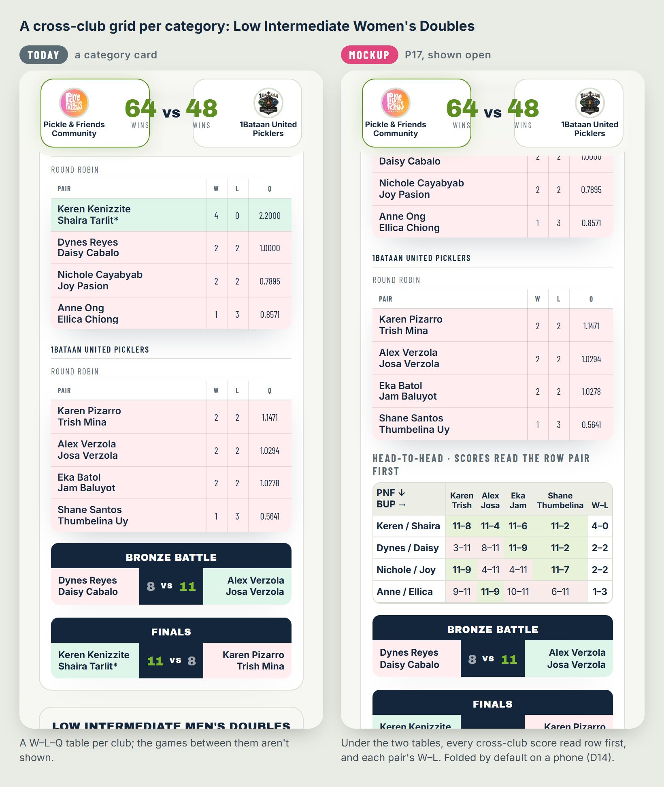

Spec — Tournament Hub player experience¶
Status: implemented — all eight steps built and live: a search shows its results; the next match on the pair summary card; the banner that folds into a bar; the round-robin status and tie pills; a Standings row opens that pair in Match Finder; a podium on a finished category; a dual meet's club score first, and Pairs; a dual meet's Standings jump to a category.
npm run verifypassed with the accepted harness entries for steps 2 to 8, and the branch was merged intomainand pushed on 2026-11-23 (site06a2fd6). Where the build departs from Part 1, the Divergences section says so. Written 2026-10-10 and 2026-10-25 as seventeen proposals; revisited 2026-11-23 againstsage-match-control.github.iocommitb89fda5, when the owner kept nine, dropped eight, had three redone and answered every decision (§12). Part 1 (§1–§12) is the build, written to be followed without any other context. Part 2 (§13–§16) is the background: why, the measurements, and what was considered and dropped.
Make the two things a player opens the Tournament Hub for, where and when do I play next? and where do we stand?, quicker on a phone. The Hub keeps its three tabs (four at a team event); nothing moves off the page.
Part 1. The build¶
1. What gets built¶
Eight steps, each one push to the site's main, in this order. Step 3 is two
proposals that share one bar.
| Step | Proposal | What a player sees | Control Center | Computers | Section |
|---|---|---|---|---|---|
| 1 | P1 | A search scrolls to its results and closes the keyboard and the suggestions | Find matches closes its suggestions; nothing scrolls | Find matches closes its suggestions; nothing scrolls | §3 |
| 2 | P3 | The pair summary card opens with the pair's next match | Yes: the card is shared | Yes | §4 |
| 3 | P2 + P5 | Once the banner scrolls away, a slim bar stays at the top with the tabs, the day and the sync line: in a ☰ menu on a phone | No | Yes: the same in a row on the right, no menu | §5 |
| 4 | P6 | Each round-robin table's header says In progress · 6/10 or Final, and tied rows say how the tie was broken | Yes, team events included | Yes | §6 |
| 5 | P14 | Tapping a Standings row opens that pair in Match Finder | No | Yes | §7 |
| 6 | P12 | A finished category's Standings card opens with its podium | No: it has its Awards tab | Yes | §8 |
| 7 | P15 | A dual meet's Match Finder opens with the club score, and counts Pairs, not Teams | The Pairs label only | Yes | §9 |
| 8 | P16 | A dual meet's Standings on a phone have chips that jump to a category | No | No: phones only | §10 |
Proposal numbers (P1…P17) are the ones the owner marked; the dropped ones are in §15. Build nothing from §15.
2. Before you start¶
2.1 Where things are¶
The workspace is D:\Personal\SAGE. Two repositories matter:
sage-match-control.github.io/, the site. Static HTML and native ES modules, no build step, no framework, served by GitHub Pages frommain. The Hub's code is the engine,lib/v1/:lib/v1/apps/hub.js:mountHub, the Hub page's wiring.lib/v1/views/: markup builders and small components (finder.js,pair-summary.js,standings.js,teams.js,ticket.js…).lib/v1/domain/: the rules, pure functions with no DOM (standings.js,awards.js,series.js,codes.js,matches.js…).lib/v1/css/: one stylesheet per view (hub.css,finder.css,standings.css,teams.css,ticket.css)._templates/<type>-template/index.html: the three Hub templates (standard, dual meet, team). Each is a shell: markup, aTHEMEblock of colours, and a call tomountHub.tools/control-center.html: Control Center, the operators' console. It sharesfinder.js,pair-summary.js,standings.js,teams.jsandticket.jswith the Hub, but notapps/hub.jsorhub.css._tests/: the unit tests and the comparison harness (§2.4).sage-docs/, the documentation, a mkdocs site. This spec issage-docs/docs/specs/implemented/hub-player-experience-spec.md.
Read sage-match-control.github.io/_templates/CLAUDE.md §8 and
sage-docs/docs/technical/site-engine.md (Dependency rules, The versioning
rule, Extension points, The comparison harness) before step 1.
2.2 The rules every step follows¶
- Only
lib/v1/is edited, and only compatibly. Add modules, exports, options and CSS classes. Never remove or rename an export, a CSS class a page uses, or a theme property, and never change an existing export's parameters or return shape.lib/v1/already serves live event pages (§2.5). - New code goes in new modules. A browser may keep any file of the site for up to ten minutes, so a module that starts using a new export of an existing module can meet a cached copy without it and fail. A brand-new module can't be cached, so importing it is always safe. Every step below puts its new functions in a new module for that reason, and is one push. Where a step adds an option to an existing function or component, an old cached copy just ignores it; that is safe too.
- Imports point one way (
_tests/unit/guards.test.mjsenforces it):domain/imports onlydomain/;views/importsdomain/andviews/;apps/imports anything but another app. No browser globals indomain/. - Control Center changes only where a step says so. Hub-only behaviour is an option the Hub passes, off by default.
- Colours come from the theme tokens every shell defines (
--navy,--navy-deep,--green,--green-dark,--paper,--paper-dim,--line,--ink,--ink-soft,--white,--muted; the full list is_tests/unit/theme-contract.test.mjs). A literal colour is used only where this spec gives one (the medal and Tied colours, which match existing pills). - "A phone" means below 900 px wide: the width at which
css/finder.cssalready pins the search box (@media (max-width:899px)). UsematchMedia('(max-width: 899px)')in JavaScript and the same media query in CSS. - Escape everything put into markup with
escapeHtmlfromviews/html.js.
2.3 The branch, and who pushes¶
cd D:/Personal/SAGE/sage-match-control.github.io
git switch main && git pull
git switch -c hub-step-1 # hub-step-2, … one branch per step
Commit on the branch. Merging into main and pushing is the owner's call: ask
before doing either. Never merge within three days of an event: check the day
dates in D:/Personal/SAGE/event-data/config/events.json first. End every commit
message with the attribution line the session asks for.
2.4 The tests¶
cd D:/Personal/SAGE/sage-match-control.github.io/_tests
npm install # once
npm test # unit tests (_tests/unit/**), plain Node, no browser
npm run compare # the comparison harness (Playwright)
npm run verify # both; run it before asking to merge
CASE='^std-index/pickle-for-sight-2026/finder' npm run compare # only some cases
- Unit tests cover pure functions and markup builders, on hand-made or fixture
models. They run in Node with no DOM.
_tests/unit/views/standings.test.mjsstubsglobalThis.window = { matchMedia: () => ({ matches: true }) }where a builder asks for the screen size; do the same. Fixture models come from_tests/helpers/fixtures.mjs:buildDayModel(eventConfig(ev), eventConfig(ev).days[0], loadSnapshot(ev), { now: caseTime(ev) }), andderiveState(snapshot, 'mid' | 'pre')for the mid-day and pre-day states. The fixture events arepiggleball-2026andpickle-for-sight-2026(standard),pnf-x-bup-dual-meet(dual meet),pickledrive-anniversary-2026andteam-demo-2026(team). - The comparison harness opens every page of
_tests/engine/cases.mjs(case ids likestd-index/pickle-for-sight-2026/finder-search/mid/phone; page labelsstd-index,dm-index,team-index,cc,cc-signed-in) in two trees, the merge-base withmainand your branch, and compares the page's text and a full-page screenshot. It only finds differences when you work on a branch. A difference you intend is listed in_tests/engine/accepted.mjsas{ case: /<regex over case ids>/, kind: 'text' | 'pixels' | 'both', row: 'owner 2026-11-23 hub P<n>', reason: '<what changed>' }. Add an entry only for cases that actually differ, scoped as narrowly as the failures, and only for the change the step describes. - Behaviour tests. The harness's screenshots are full-page: the viewport
grows to the page's height, so nothing is ever scrolled and the banner is
always in view. Scrolling, the bar and the menu (steps 1, 3, 5, 8) are checked
instead by a new test file,
_tests/engine/hub-behaviour.test.mjs, whichnpm run compareruns with the rest ofengine/. It opens a harness case at a real 375 × 812 viewport and asserts on the live page:
import { describe, it, before, after } from 'node:test';
import assert from 'node:assert/strict';
import { SITE_ROOT } from '../helpers/paths.mjs';
import { launchBrowser, openPage, settle } from '../helpers/browser.mjs';
import { startSite } from '../helpers/server.mjs';
import { buildCases } from './cases.mjs';
const cases = buildCases();
/** Open a harness case; with runSteps, also run its steps (open a tab, pick a category…). */
async function openCase(browser, site, id, { runSteps = false } = {}) {
const c = cases.find(x => x.id === id);
site.register(c.id, c.instantiate);
const h = await openPage(browser, site.baseUrl + c.path, {
viewport: c.viewport, time: c.time, registry: c.registry, snapshots: c.snapshots,
fixtureFiles: c.fixtureFiles, external: c.external, cloudRun: c.cloudRun,
allowErrors: c.allowErrors, storage: c.storage, caseId: c.id,
});
await settle(h.page);
if (runSteps) for (const s of c.steps) { await s.run(h.page, h); await settle(h.page); }
return h;
}
describe('the Hub on a phone', () => {
let browser, site;
before(async () => { browser = await launchBrowser(); site = await startSite({ root: SITE_ROOT }); });
after(async () => { await browser.close(); await site.close(); });
// it(...) per behaviour, each opening its own page with openCase and closing it in finally.
});
The harness's pages run with reduce motion on, so every scroll is instant.
2.5 The live pages the engine already serves¶
Four event pages import lib/v1/ and change the moment a step reaches main:
events/acso-sportsfest-2026/, events/upap-2026/,
events/archives/ladies-dink-2026/ and events/archives/millennium-invitational-2026/.
The harness covers only the templates, and these shells have their own hero
markup (UPAP's date line has a <br>; its title has spans). Before asking to
merge, open each at 375 × 812 (the browser's device toolbar) and check the
step's change looks right and nothing else moved. They read the real published
results over the internet. To serve the repo:
cd D:/Personal/SAGE/sage-match-control.github.io
node -e "import('./_tests/helpers/server.mjs').then(async ({ startSite }) => { const s = await startSite({ root: '.' }); console.log(s.baseUrl + '/events/upap-2026/'); })"
2.6 The docs, with every step¶
In sage-docs, in the same change as the step's merge (§11 lists the pages):
describe what the Hub does now, in the present tense; bump the version (a new
## [x.y.z] — YYYY-MM-DD entry at the top of docs/changelog.md, the same
version in mkdocs.yml's copyright line; a feature change is a MINOR bump). On
the first step merged, move this spec to docs/specs/in-progress/ and after the
last to docs/specs/implemented/, following the procedure in
docs/specs/README.md. Where the build departs from this spec, add a
Divergences section at the end of Part 1 saying what and why.
2.7 The pictures¶
Each step's picture is a mockup: the real template page on fixture data at 1 PM, 375 × 812, with the new elements drawn in by hand. It shows what goes where and roughly how it looks; the sizes and colours written in the step win where the two differ. In the mid-day pictures the card's playoff rows are left out and the Standings tables show the finished day's W and L: the fixtures' mid-day state blanks scores but keeps the finished day's names and standings, which a real mid-day workbook would not have.
3. Step 1 — P1: show the results after a search¶
Today. On a phone a search changes nothing on the first screen: the results
start at 763 px on an 812 px screen, under the banner and the search box
(§13.1). Find matches leaves the suggestion list open over the results
(createFinder closes it only on a click outside .autocomplete, and the
button is inside), and the keyboard stays up. A team event's team chip scrolls to
the top of the page.
After. When a person runs a search, on a phone, the suggestions close, the keyboard closes, and the page scrolls so the results start just under the pinned search box. On a computer nothing scrolls. A data refresh (every push or poll) and clearing the box never scroll.
![Match Finder on a phone after searching for Josh Manarang / Angelo Manarang at Pickle for Sight, 1 PM. Today, first screen: the banner and the search box fill it and the results start below. Today, scrolled down: the pair summary card (Novice Men's Doubles, Bracket 2, #2 of 5, W 3, L 1, PF 20, PA 12, Q 3.0000), then the tickets. Mockup: the page has scrolled to the results, and the card opens with a navy Next match block reading 2:50 PM · Court 4, vs Tony Hecker / Angelo Culala · PCPH Main, Round robin · Match 1060.](../../../images/hub-player-experience/p1-p3-search.png)
The right-hand panel is steps 1 and 2 together.
Build.
- New module
lib/v1/views/reveal.js, exporting: PHONE_QUERY = '(max-width: 899px)'.revealResults({ resultsEl, searchPanelEl, input }), returningtruewhen it scrolled andfalsewhen it did nothing. It does nothing unlessmatchMedia(PHONE_QUERY).matches. Otherwise:input.blur(); thenstuck = (parseFloat(getComputedStyle(searchPanelEl).top) || 0) + searchPanelEl.getBoundingClientRect().height + 8;top = resultsEl.getBoundingClientRect().top + window.scrollY - stuck;window.scrollTo({ top: Math.max(0, top), behavior: matchMedia('(prefers-reduced-motion: reduce)').matches ? 'auto' : 'smooth' }). (searchPanelElisposition: sticky; top: 8pxon a phone, sostuckis the space it takes once pinned.)views/finder.js,createFinder: a new optiononSearched(default() => {}), called right afterfinder.run()in exactly three handlers: a click on a suggestion (acListclick), Enter in the box, and the Find matches button. In the Find matches handler, alsoacList.classList.remove('show')beforefinder.run(); that one is a fix and reaches Control Center too.refresh,rebuildIndex,setQuery,resetand the clear button never callonSearched. Document the option in the comment abovecreateFinder.views/teams.js,createTeams: a new optiononSearched, a function returningtruewhen it moved the page. In the team chip handler (.team-chip-btn), afterfinder.run(): calloptions.onSearchedwhen it is set, and keep today'swindow.scrollTo({ top: 0, … })when it is not set or returnedfalse. So a computer, whererevealResultsdoes nothing, and Control Center keep scrolling to the top as today. Document it with the other options.apps/hub.js:const reveal = () => revealResults({ resultsEl, searchPanelEl, input });and passonSearched: revealto bothcreateFinderandcreateTeams. (createFinderignores the return value.)- A returning visit (decision D3). In
selectDay'sisInitialLoadbranch, afterfinder.setQuery(savedSearch), callreveal()when the Match Finder tab is the active one (document.querySelector('.view-tab[data-view="finder"].active')).
Tests.
hub-behaviour.test.mjs(§2.4), onstd-index/pickle-for-sight-2026/finder/mid/phone: typeJoshinto#teamInput, click the first#acList .ac-item, then assert#results'sgetBoundingClientRect().topis between 0 and 300,document.activeElementis not#teamInput, and#acListlacksshow. Again with Find matches (#searchBtn) after typingJosh Manarang. The same on…/desktopassertswindow.scrollYis unchanged. Onteam-index/pickledrive-anniversary-2026/finder/mid/phone, click the first.team-chip-btnand assert#resultsis near the top as above; on its…/desktoptwin, scroll down 400 px first, click the chip, and assertwindow.scrollYis 0 (today's behaviour, kept).- The harness: add a view
finder-find-buttonto the default views inhubCases(_tests/engine/cases.mjs):[type('#teamInput', word), click('#searchBtn')]. On the baseline its suggestions stay open; accept that difference. - Manual: §2.5's four pages, a search on each.
Done when the behaviour tests pass, npm run verify passes with only the
accepted differences above, and the four live pages behave.
4. Step 2 — P3: the next match on the pair summary card¶
Today. Match Finder's pair summary card (views/pair-summary.js, drawn by
pairResultsHTML in views/finder.js above a searched pair's tickets) shows the
pair's category, bracket, round-robin rank, W, L, PF, PA, Q, a row per playoff
round reached, and a status pill. For a pair in the playoffs its round rows
already give the next match. During the round robin, most of the day, nothing on
the card says when the pair plays next: only a small Next Up pill on one
ticket further down. A round-robin match on court shows no Playing now. Before
the day goes live the card is not drawn at all.
After. The card opens with a navy block that answers where and when do I play next? (the right-hand panel of the picture in §3).
| State | When | The block |
|---|---|---|
| Playing now | The day is live and one of the pair's matches has a live court (m.liveCourt) and is not played |
Playing now (with the live dot) · Court 3 · vs opponent · round · match number |
| Next match | Otherwise, the pair's Next Up match (the rule below) | Next match · 2:50 PM · Court 4 · vs opponent · round · match number |
| Nothing left | No match is live or next | No block |
Build.
- New module
lib/v1/domain/pair-schedule.js, the order and the Next Up rule moved out ofpairResultsHTMLunchanged: pairMatches(model, codes):model.matcheswherecodesincludesm.t1orm.t2andmatchByeSide(m) === null(domain/byes.js), sorted byeventScheduleMinutes(m.time)(domain/progress.js;nullsorts last asInfinity), then bym.num.nextUpIndex(model, list): the index of the firstminlistwith!m.played && !m.liveCourt && !model.unneededGames.has(m), or-1.views/finder.js,pairResultsHTML: use the two functions instead of its own sort andfindIndex. Nothing it draws changes; the existing tests in_tests/unit/views/finder.test.mjsmust pass unchanged.views/pair-summary.js: a new exportnextMatchHTML(team, model)(teamis a pair ofbuildPairIndex:{ codes, p1, p2, label }):list = pairMatches(model, team.codes).filter(m => !model.unneededGames.has(m)).live = model.isLive ? list.find(m => m.liveCourt && !m.played) : null; otherwisenext = list[nextUpIndex(model, list)]. Neither: return''.- The pair's side is side 1 when
team.codes.includes(m.t1). The opponent is the other side:"<p1> / <p2>", or, when that side is open (the file's ownsideIsOpen(code, p1)),openSeatLabel(code, model) || 'To be decided'. - The round:
roundKeyword(parseCode(<the pair's code in m>, type).rest)mapped through the file'sROUND_NAME(Semifinal,Final,Bronze…), orRound robinwhen it isnull; a series game (seriesGameOf(code)notnull) adds· Game <n>. - The facility, only when
model.day.facilities.length > 1:m.facility. -
Markup (every value escaped):
<div class="ps-next ps-next--live"> <!-- or ps-next--next --> <small><span class="live-dot"></span>Playing now</small> <!-- or: Next match (no dot) --> <b>Court 3</b> <!-- next: "2:50 PM · Court 4"; leave out " · Court…" when m.court is blank --> <span>vs Tony Hecker / Angelo Culala<i> · PCPH Main</i></span> <!-- the <i> only with a facility --> <em>Round robin · Match 1060</em> </div>Live court text is
Court ${m.liveCourt}; the next match's ism.time, then· ${m.court}(the scheduledCourtAssignment, already "Court 4"). 4.pairSummaryHTML: a team event still returns''(decision D2: team events later). When the day is not live, or the pair has no round-robin row, return<div class="pair-summary">${nextMatchHTML(team, model)}</div>, or''when the block is empty (decision D15). Otherwise insertnextMatchHTML(team, model)as the card's first child, before.ps-top. Control Center draws the same card and gets the block too (decision D16). 5.css/finder.css, after the.ps-*rules:.ps-next{background:var(--navy); color:var(--white); border-radius:12px; padding:12px 14px; margin:0 0 12px;};.ps-next smallBarlow Condensed 700, 12px, letter-spacing .12em, uppercase,color:var(--green),display:flex; align-items:center; gap:6px;.ps-next bblock, Archivo Black 400, 24px, line-height 1.15, margin 3px 0 4px;.ps-next spanblock, 14px, line-height 1.35;.ps-next span inormal style, opacity .7;.ps-next eminline-block, normal style, margin-top 7px, Barlow Condensed 700 12px, letter-spacing .08em, uppercase,background:rgba(255,255,255,.14), radius 999px, padding 3px 9px. The live dot is the existing.live-dot; on navy give itbackground:var(--white)as.ps-status--live .live-dotdoes.
Tests. _tests/unit/domain/pair-schedule.test.mjs (new): schedule order over
the match number, a BYE left out, Next Up skipping a live and an unneeded series
game. _tests/unit/views/pair-summary.test.mjs, on its hand-made days: the next
round-robin match; Playing now with a live court; an open playoff seat reading
its label; nothing left gives no block; a day not live gives the block alone; a
team event gives ''. The harness: every finder-search case of std-index,
dm-index and cc differs (accept both).
Done when those pass, npm run verify passes with the accepted differences,
and §2.5's pages show the block after a search.
5. Step 3 — P2 + P5: a banner that folds into a bar¶
Today. The banner (logos, tagline, date and venue, title, headline, tabs, sync line) fills the first 541 px of a phone and about 500 px of a computer. Scrolled away, it takes the event's name, the tabs, the day picker and the sync line with it: switching tab means scrolling back to the top.
After. At the top of the page the banner is unchanged. Once it has scrolled out of view, a slim navy bar is pinned to the top of the screen, on every screen size: the event's logo, its date and venue line in small green capitals and its title on the left. What is on the right depends on the width:
- On a phone (below 900 px), a button naming the open tab (Match Finder ☰). It opens a menu over a dimmed page: the tabs (the open one marked), the day picker at a multi-day event, and the sync line.
- On a computer (900 px and wider), the same three in a row, right-aligned, with no menu: the sync line in small type, the day picker at a multi-day event, then the tabs as pills, the open one green (decision D19). Below 1100 px the sync line is left out, to leave room.
The bar goes away when the banner scrolls back into view. On a computer the QR panel (fixed in the top-right corner) moves down under the bar while it shows (D20), and Match Finder's search box scrolls away with the page as today: only a phone pins it (D21). The bottom tab bar first proposed for P5 is not built.


Build.
- New module
lib/v1/views/hub-bar.js, exportingHUB_BAR_HEIGHT = 54andcreateHubBar(options): - Options:
heroEl(header.hero),tabsWrapEl(#viewTabsWrap),dayPickerEl(#dayPicker),dayPickerWrapEl(#dayPickerWrap),syncStatusEl(#syncStatus),panelFor(view)(the element to scroll to after a tab switch). -
It appends to
document.body, once:<div class="hub-bar" hidden> <img class="hub-bar-logo" src="…" alt=""> <!-- the first .hero-logos img's src; left out when there is none --> <div class="hub-bar-text"> <small class="hub-bar-meta">Sep 27 · PCPH Main</small> <span class="hub-bar-title">Pickle for Sight</span> </div> <div class="hub-bar-row"> <!-- a computer's row; filled by update() --> <span class="hub-bar-sync">Sep 27 · Live · last synced 7:50:29 PM</span> <label class="hub-bar-day">Day <select>…</select></label> <!-- only at a multi-day event --> <button type="button" class="hub-bar-tab active" data-view="finder">Match Finder</button> <button type="button" class="hub-bar-tab" data-view="live">Live Matches</button> <button type="button" class="hub-bar-tab" data-view="standings">Standings</button> </div> <button type="button" class="hub-bar-btn" aria-expanded="false" aria-controls="hubMenu"> <!-- a phone's menu button --> <span class="hub-bar-btn-label">Match Finder</span><span class="hub-bar-burger" aria-hidden="true"></span> </button> </div> <div class="hub-menu-scrim" hidden></div> <nav class="hub-menu" id="hubMenu" aria-label="Tournament Hub" hidden></nav>Both the row and the button are in the markup; the CSS shows one per width. The meta line is
heroEl.querySelector('.eyebrow')'sinnerText, the title.title'sinnerText, each with.replace(/\s+/g, ' ').trim()(innerText, so a<br>becomes a space). A missing element leaves its line empty. - The items, the same on both widths and built by one function each time they are drawn: one tab per.view-tabthat is showing (style.display !== 'none'and nothidden),activeon the open one; the day picker whendayPickerWrapEl.style.display !== 'none', a<select>withdayPickerEl's options (leave out its disabled placeholder) and its value; the sync line,syncStatusEl.textContent, whensyncStatusElis showing. - A tab (in the row or the menu) closes the menu if it is open, clicks the matching.view-tab(whose handler switches the view and remembers it), then scrollspanelFor(view)to just under the bar (top - HUB_BAR_HEIGHT - 8, instant under reduce motion). The day select closes the menu, setsdayPickerEl.value, dispatches achangeevent ondayPickerEland scrolls to the top. - When the bar shows. All three: the tabs are showing (tabsWrapEl.style.display !== 'none'); the hero is out of view (anIntersectionObserveronheroEl, threshold 0, keeps the lastisIntersecting); and the stylesheet has loaded (getComputedStyle(bar).position === 'fixed', so a cached oldhub.cssnever shows an unstyled bar). Re-check on the observer's callback and on everyupdate(). Showing setsbar.hidden = falseand addshub-bar-ontodocument.body; hiding reverses both and closes the menu. - The menu (a phone). The button toggles it. Opening fills#hubMenuwith the items:<button type="button" class="hub-menu-tab">per tab, then<label class="hub-menu-day">Day <select>…</select></label>, then<div class="hub-menu-sync">. It unhides the scrim and the menu, setsaria-expanded="true"and focuses the first tab. The scrim, the button and Escape close it, which returns focus to the button. When the screen widens to 900 px or more (matchMedia(PHONE_QUERY)'schangeevent; importPHONE_QUERYfrom./reveal.js) an open menu closes. - Returns{ update() }: redraws the row's items and the button's label (the open tab's text), and re-checks when the bar shows. 2.apps/hub.js: create the bar after the elements are looked up, withpanelFor: v => ({ finder: searchPanelEl, live: liveResultsEl, standings: standingsResultsEl, teams: teamsResultsEl })[v]. Callbar.update()at the end ofshowView, at the end ofrevealLiveTabsAfterLoad, inselectDayafter it hides the tabs, and inloadLiveDataafter it writes the sync line (both the success and the error branch). 3.views/reveal.js(step 1): whendocument.body.classList.contains('hub-bar-on')is false but a.hub-barexists, the bar is about to appear as the page scrolls, so add the bar's 54 px tostuck. Define the number locally rather than importing it, so the two modules stay independent. 4.css/hub.css, appended: - Every width: -.hub-bar{ position:fixed; top:0; left:0; right:0; z-index:50; height:54px; display:flex; align-items:center; gap:10px; padding:0 12px; background:var(--navy); color:var(--white); box-shadow:0 4px 14px rgba(0,0,0,.18); }and.hub-bar[hidden]{ display:none; }(adisplay:flexrule overrides thehiddenattribute otherwise). -.hub-bar-logo{ width:32px; height:32px; border-radius:8px; background:var(--white); object-fit:contain; flex:none; }-.hub-bar-text{ flex:1; min-width:0; };.hub-bar-metaand.hub-bar-title:display:block; white-space:nowrap; overflow:hidden; text-overflow:ellipsis;. Meta: Barlow Condensed 700, 11px, letter-spacing .12em, uppercase,color:var(--green). Title: Archivo Black 400, 15px, line-height 1.1, uppercase. -.hub-menu, .hub-menu-scrim{ display:none; }until the phone rules below. - Everything already pinned to the top moves under the bar:body.hub-bar-on .standings-col-head, body.hub-bar-on .club-summary{ top:54px; }(bothtop:0instandings.css, and pinned whenever Standings use their phone layout, which a wide but short screen does too). - Under@media (min-width:900px): -.hub-bar{ padding:0 20px; gap:12px; },.hub-bar-logo{ width:34px; height:34px; },.hub-bar-btn{ display:none; }. -.hub-bar-row{ display:flex; align-items:center; gap:8px; flex:none; }. -.hub-bar-sync: Barlow Condensed 12.5px,rgba(255,255,255,.7),white-space:nowrap, margin-right 6px. -.hub-bar-day: a pill (background:rgba(255,255,255,.08); border-radius:999px; padding:5px 12px;), its label Barlow Condensed 700 12px uppercasergba(255,255,255,.6), the select white on transparent, no border. -.hub-bar-tab: Barlow Condensed 700, 12.5px, letter-spacing .06em, uppercase,color:var(--white), transparent,border:1px solid rgba(255,255,255,.25); border-radius:999px; padding:6px 14px; white-space:nowrap;a visible focus ring;.hub-bar-tab.active{ background:var(--green); border-color:var(--green); color:var(--navy); }. -body.hub-bar-on .qr-panel{ top:80px; }(it istop:26px). - Under@media (min-width:900px) and (max-width:1099px):.hub-bar-sync{ display:none; }. - Under@media (max-width:899px): -.hub-bar-row{ display:none; }. -.hub-bar-btn:display:flex; align-items:center; gap:8px;Barlow Condensed 700, 13px, letter-spacing .06em, uppercase,color:var(--white),background:rgba(255,255,255,.1); border:1px solid rgba(255,255,255,.22); border-radius:999px; padding:6px 12px 6px 14px;a visible focus ring..hub-bar-burger: 16 × 12 px, three 2px white bars (threelinear-gradientbackgrounds at 0, 5px and 10px); with[aria-expanded="true"]it is a × (two crossed bars). -.hub-menu-scrim{ display:block; position:fixed; inset:54px 0 0 0; z-index:48; background:rgba(10,18,30,.45); }and.hub-menu{ display:block; position:fixed; top:54px; left:0; right:0; z-index:49; background:var(--navy); padding:6px 14px 16px; border-top:1px solid rgba(255,255,255,.12); }, each with a[hidden]{ display:none; }rule. -.hub-menu-tab: full-width block button, no background, left-aligned, Barlow Condensed 700, 18px, letter-spacing .06em, uppercase,color:var(--white), padding 13px 6px,border-bottom:1px solid rgba(255,255,255,.1);.hub-menu-tab.active{ color:var(--green); }with a small ● at its right. -.hub-menu-day: a row onrgba(255,255,255,.08), radius 10px, padding 10px 12px, margin-top 10px; its label in Barlow Condensed uppercasergba(255,255,255,.6); the select white on transparent..hub-menu-sync: margin-top 12px, Barlow Condensed 12.5px,rgba(255,255,255,.7). -body.hub-bar-on .search-panel{ top:62px; }(it istop:8pxinfinder.css, and pinned only on a phone). - The templates' viewport tag has noviewport-fit=cover, so the page never runs under a phone's status bar: the bar needs no safe-area padding, and no shell changes. 5. Control Center does not usecreateHubBar; it does not change.
Tests. hub-behaviour.test.mjs:
- On
std-index/pickle-for-sight-2026/finder/mid/phone: at the top.hub-baris hidden; afterwindow.scrollTo(0, 1500)it is visible,bodyhashub-bar-on,.hub-bar-btnis visible and.hub-bar-rowis not; the label readsMatch Finder; clicking.hub-bar-btnshows#hubMenuwith three.hub-menu-tabs, oneactive; clicking the Standings one hides the menu, makes.view-tab[data-view="standings"]active and leaves the labelStandings; Escape closes an open menu; back at the top the bar hides. - On
std-index/pickle-for-sight-2026/finder/mid/desktop: at the top the bar is hidden; after scrolling, it is visible,.hub-bar-rowholds three.hub-bar-tabs (oneactive) and the sync line,.hub-bar-btnis not visible, there is no day picker (a one-day event), and.qr-panel's top is at least 54 px; clicking the Standings tab makes it active on the bar and in the banner. - On
team-index/pickledrive-anniversary-2026/finder/mid/phonethe menu has four tabs. - A multi-day event: none of the fixtures has two days, so give the test its own
registry: take the
std-index/pickle-for-sight-2026/finder/mid/desktopcase, copyc.registryand add a second day to the event'sdays(a new key, the same facilities, the next date), copyc.snapshotsand put the first day's snapshot under the new key too, and pass both toopenPage. Assert the bar's day picker lists both days, and that choosing the second reloads the page's day (the banner's#dayPickervalue changes).
The harness: nothing should differ (the full-page screenshots never scroll); if a
case does, find out why before accepting it. Manual: §2.5's four pages scrolled, on
a phone with the menu open and on a computer at 1280 px and at 950 px (no sync line),
and the dual meet template's Standings (dm-index) scrolled on a phone, to see its
club bar pin under the bar.
Done when those pass and the four live pages look right at both sizes.
6. Step 4 — P6: a status pill on each round-robin table, and tie pills¶
Today. A round-robin table mid-day reads as final: nothing says whether its matches are all played. Where pairs are level on wins, nothing says what placed one above another.
After. Each round-robin table's header carries a pill, and each row tied with
another on wins carries a pill saying how the tie was broken. No pill before the
day is live (model.isLive). Control Center's Standings draw them too.

![Three mockups on a phone, every bracket header reading Final. First, Pickle for Sight's Novice Mixed Doubles, Bracket 2: three pairs on 2 wins, each having beaten one of the others, each with a grey "3-way tie · on quotient" pill. Second, the same bracket with one result flipped: Chun Sa / Ralph "Tie · won head-to-head 11–5" above Mark Luz / Amcee Sumaya "Tie · lost head-to-head 5–11", then Jairus Villanueva / Abigail Sanchez, quotient 0.5313, "Tie · won head-to-head 11–10" above Charles Casas / Joy Galdo, quotient 0.8125, "Tie · lost head-to-head 10–11". Third, Novice Men's Doubles, Bracket 3: two pairs on 0 wins who drew 11–11, with the same quotient 0.3333, each with a yellow "Tied" pill.](../../../images/hub-player-experience/p6-tie-pills.png)
The second tie picture's middle panel is the fixture with one result flipped (match 1085: Jairus Villanueva / Abigail Sanchez beat Charles Casas / Joy Galdo 11–10, the two pairs' standings rows recounted): no event yet has had a two-way tie settled by head-to-head. The engine placed Jairus Villanueva's pair above Charles Casas's on head-to-head despite the lower quotient, as the pills say.
The table pill.
| State | When | Text | Fill |
|---|---|---|---|
| In progress | Some of the table's round-robin meetings are unplayed | In progress · 6/10 (played/total) |
var(--green-dark), white text |
| Final | All are played, and there is at least one | Final |
var(--navy), white text |
A table's meetings are the round-robin matches (roundKeyword of the code's
rest is null) with a side whose code is a row of the table, no BYE side
(matchByeSide(m) === null), counted once each, except a best-of-3 meeting (rows
with m.bestOf === 3, grouped by rrSeriesGroups in domain/series.js), which is
one meeting, played when walkSeries(list, 3).decidedBy is set. Any other match is
played when m.played. In a standard bracket both sides are in the table; in a
dual meet's per-club table one side is, so both clubs' tables count the same
cross-club matches.
Where it goes: in a bracket's .rr-bracket-label (after its text) when the
table has one (the standard Hub and Control Center draw each bracket as its own
table); otherwise in the table's Round Robin heading (.stage-caption, or the
.standings-section-text title of a standard card). The dual-meet Hub draws one
table per club with rrBracketLayout: 'column': one pill in its heading for the
whole table.
The tie pills. The Hub orders a table's pairs by wins, then head-to-head among
the pairs level on wins, then quotient (rankStandings and headToHeadWins in
domain/standings.js; a drawn match and an undecided best-of-3 meeting count for
neither pair). The pills say what that order did, among the table's rows that have
played (wins + loss > 0):
| The rows level on wins | Each row's pill |
|---|---|
| Two, separated by head-to-head | Tie · won head-to-head 11–5 / Tie · lost head-to-head 5–11 |
| Three or more; this row's head-to-head wins differ from every other's in the group | 3-way tie · head-to-head |
| This row shares its head-to-head wins with another, and its quotient differs from theirs | Tie · on quotient (two in the group) or 3-way tie · on quotient (three or more) |
| This row shares its head-to-head wins and its quotient with another | Tied |
n-way is the size of the whole group level on wins. The score in a two-way
head-to-head pill is the pair's own side first: of the one match they played; of a
best-of-3 meeting, its games (won head-to-head 2–1); of two or more meetings (a
double round robin), the meetings won and lost (won head-to-head 2–0). Pairs at a
dual meet's club table never meet, so their ties read on quotient. A pair level
with no other has no pill. The Tied pill is background:#FFD873; color:#5A4100,
the team events' Tied colours; the others are var(--paper-dim) with
var(--ink) text and a var(--line) border.
The workbook picks who advances by wins, then quotient, so on a head-to-head tie it
can disagree with the Hub's order; the pills describe the Hub's order only.
sage-docs/docs/specs/.../ranking-rules-spec.md (not started) would let an event
choose other ranking rules: when it is built, the tie pills follow whatever
rankStandings does.
Team events (decision D6): each bracket table's h3.group-title in
views/teams.js (groupTableHTML and groupTableByGamesHTML) gets the table pill
too, counting the bracket's matchups (model.team.matchups with stage === null
and group equal to the bracket): played when result.state is final or tie.
Team tables get no tie pills: their ranking and their own Tied · playoff pill stay
as they are.
Build.
- New module
lib/v1/domain/standings-status.js(importsdomain/only): tableProgress(rows, matches, type)→{ played, total }by the rule above.tieBreaks(rows, matches)→Map<teamCode, { size, rule: 'h2h' | 'quotient' | 'none', won?, score? }>by the table above: group the played rows bywins; for each group of two or more,h2h = headToHeadWins(group, matches); a row whoseh2hvalue is unique in the group ish2h, else among the rows sharing its value it isquotientwhen itsquotientis unique, elsenone. For a two-rowh2hgroup addwonandscore("11–5", en dash). It importsheadToHeadWinsfromdomain/standings.js(an existing export) and groups exactly asrankStandingsdoes; a test checks, on each tie case below, that ordering by the pills' rules givesrankStandings' order.teamTableProgress(matchups, group)→{ played, total }for a team bracket.views/ticket.js,pairCell: a new optionafter(an HTML string, default'') placed inside the<td>, after the two names. Old cached copies ignore it.views/standings.js,stageTablesHTML: whenmodel.isLive, computetableProgressper drawn table andtieBreaksper bracket group (where it already callsrankStandings), draw the table pill (<span class="rr-status rr-status--progress">In progress · 6/10</span>orrr-status--final), and pass each row's pill aspairCell'safter(<br><span class="rr-tie">…</span>,rr-tie rr-tie--tiedfor Tied).views/teams.js: the table pill in eachh3.group-titlewhenmodel.isLive.css/standings.css(loaded by all three templates and Control Center):.rr-status{ display:inline-block; margin-left:8px; font-family:'Inter',sans-serif; font-size:9.5px; font-weight:800; letter-spacing:.06em; text-transform:uppercase; border-radius:100px; padding:2px 9px; vertical-align:1px; border:1px solid rgba(255,255,255,.55); },.rr-status--progress{ background:var(--green-dark); color:var(--white); },.rr-status--final{ background:var(--navy); color:var(--white); }. In a light heading (.stage-caption) drop the border. The tie pill must beat.br-table td.pair span{ display:block; white-space:nowrap; overflow:hidden; text-overflow:ellipsis; }:.br-table td.pair span.rr-tie{ display:inline-block; overflow:visible; text-overflow:clip; margin-top:4px; font-family:'Inter',sans-serif; font-size:9px; font-weight:800; letter-spacing:.05em; text-transform:uppercase; border-radius:100px; padding:1px 8px; background:var(--paper-dim); color:var(--ink); border:1px solid var(--line); }and.br-table td.pair span.rr-tie--tied{ background:#FFD873; color:#5A4100; border-color:#FFD873; }.
Tests. _tests/unit/domain/standings-status.test.mjs (new): counts on the
pre, mid and final fixture states; a best-of-3 meeting counted once; a BYE
left out; each tie case: Pickle for Sight's Novice Mixed Doubles Bracket 2 (a
circle: quotient ×3), the same with match 1085's scores swapped in the fixture
(two h2h pairs, scores 11–5 and 11–10), its Novice Men's Doubles Bracket 3
(none ×2), and PNF × BUP (dual meet: quotient); rows with nothing played get
nothing. _tests/unit/views/standings.test.mjs: the pill markup in a bracket label
and in a heading; nothing when not live. teams.test.mjs: the team table pill. The
harness: every Standings case of every page differs (accept both).
Done when those pass and §2.5's pages show the pills (Ladies' Dink and Millennium are team events: their bracket tables).
7. Step 5 — P14: a Standings row opens that pair's matches¶
Today. To see the matches behind a row, a pair switches to Match Finder and types its names.
After. On the Hub, each round-robin row with names ends with a › and opens that pair in Match Finder: the tab switches and, with steps 1 and 2, the page lands on its next match. A row with no names (an unseeded slot, TBD) does nothing. Standard and dual-meet events; team Standings are unchanged. Control Center is unchanged.

Build.
views/standings.js: acreateStandingsoptiononPairSelect(teamCode)(default none). When set, the round-robin rows drawn bystageTablesHTMLfor a named pair (notisEmptyStanding, notisUnnamedScheduledPair) getclass="… rr-open",data-team="<teamCode>",tabindex="0", and<span class="rr-open-mark" aria-hidden="true">›</span>at the end of the Q cell. Thread a boolean (openRows) through the options the builders already pass:cardOptions()for a standard event, the options given todualMeetStandingsHTMLfor a dual meet.bodyEl's existing click listener callsoptions.onPairSelect(tr.dataset.team)for a click insidetr.rr-open; add akeydownlistener doing the same on Enter.css/standings.css:tr.rr-open{ cursor:pointer; },tr.rr-open:focus-visible{ outline:2px solid var(--green-dark); outline-offset:-2px; },.rr-open-mark{ color:var(--muted); font-weight:700; margin-left:4px; }.apps/hub.js, for a standard or dual-meet event,onPairSelect: code => { … }:const team = finder.pairs.find(t => t.codes.includes(code)); if(!team) return;click.view-tab[data-view="finder"]; theninput.value = team.label; finder.selection = team; finder.updateClear(); finder.run();. Thenif(!reveal()) window.scrollTo({ top: Math.max(0, searchPanelEl.getBoundingClientRect().top + window.scrollY - 16 - (document.querySelector('.hub-bar') ? 54 : 0)) })(the 54 leaves room for step 3's bar, which appears as the banner leaves the screen): on a phonereveallands on the results; on a computer, where it does nothing, the page goes to the search box, so the results are in view rather than wherever Standings had been scrolled to. These arecreateFinder's existing members, so no cached-module risk.
Tests. standings.test.mjs: with openRows the named rows carry data-team
and the mark, TBD rows don't; without it nothing changes.
hub-behaviour.test.mjs, on std-index/pickle-for-sight-2026/standings-category-2/mid/phone
with runSteps: true (it opens Standings and picks the second category): click the first
tr.rr-open, then assert Match Finder is the active tab, #results holds
.pair-summary, and #results is near the top. On
std-index/pickle-for-sight-2026/standings/mid/desktop with runSteps: true,
scroll so a row is in view, click it, and assert #searchPanel's top is within
the viewport. The harness: every Standings case
of std-index and dm-index differs (the marks; accept pixels).
Done when those pass and a row tap works on ACSO's and UPAP's pages.
8. Step 6 — P12: a podium on a finished category¶
Today. A category's result is the Final's row in its bracket. A searched pair's card names its own medal, but nothing says who won a category.
After. On the Hub, once a category's podium is known, its Standings card opens with it: gold, silver and bronze with the names, and under gold the final, e.g. Beat Makeen Fernandez / Noelle Mercado 11–7 in the final. A team event's Standings open with the event's podium the same way (decision D11). Control Center has its Awards tab and is unchanged.

The picture predates the PF and PA columns and the match-number tabs; the podium card is what it shows.
The rule. The podium is Control Center's Awards tab's (domain/awards.js), so
the two never disagree:
- Standard and dual meet:
buildPodiums(model)gives one entry per category code ({ category, source, gold, silver, bronze, warning }; each medalist{ p1, p2, club, clubLabel }ornull). Show it whenwarningisnull,goldandsilverare set, and eitherbronzeis set or the category has no bronze at all (resolveDecisiveMatch(model, category, 'B').anyis false andstandingsBronzeWalkover(model, category).walkoveris false). A category decided by its round robin alone (source: 'standings') shows its podium too, once its round robin is done. - The final line, only for
source: 'bracket':m = resolveDecisiveMatch(model, category, 'F').match. Whenmis a series game (seriesGameOf(m.t1)notnull): Beatin the final . Otherwise Beat<winner's score>–<loser's score> in the final . - Team:
buildTeamPodium(model), the same show rule (the event has no bronze when no matchup hasstage === 'Br'); medalists are{ teamName }. The final line uses theFimatchup'sresult:pts1–pts2from the winner's side, orpairs1–pairs2whenresult.scoring === 'games'.
Build.
- New module
lib/v1/views/podium.js(importsdomain/andviews/html.js):podiumFor(model, category)andteamPodiumFor(model)return{ gold, silver, bronze, finalLine }ornullby the rule above (cachebuildPodiums(model)per model in aWeakMap);podiumHTML(p)returns:
<div class="podium">
<div class="podium-title">Podium</div>
<ol class="podium-list">
<li class="podium-place podium-place--gold"><span class="podium-rank">1</span>
<span class="podium-names">Joshua Dizon / Jericho Dizon<small>Beat Makeen Fernandez / Noelle Mercado 11–7 in the final</small></span></li>
<li class="podium-place podium-place--silver">…2…</li>
<li class="podium-place podium-place--bronze">…3…</li> <!-- left out without a bronze -->
</ol>
</div>
A dual meet's names add · <clubLabel>; a team's are its teamName.
2. views/standings.js: a createStandings option podium (default false),
carried in the card options. categoryCardHTML and categoryColumnHTML put
podiumHTML(podiumFor(model, category)) first in .standings-col-body when it
is set, where category is parseCode(rows[0].teamCode, type).category.
3. views/teams.js: a createTeams option podium (default false), put in
hooks; teamStandingsHTML starts with podiumHTML(teamPodiumFor(model)) when
hooks.podium and the podium is known.
4. apps/hub.js: podium: true to createStandings and createTeams.
5. css/standings.css: .podium a card (background:var(--white), radius
14px, box-shadow:var(--card-shadow), padding 12px 14px, margin 0 0 14px);
.podium-title Barlow Condensed 700 12px uppercase, letter-spacing .1em,
var(--muted); .podium-list no bullets, no padding; .podium-place a flex row,
gap 10px, padding 6px 0, a dashed var(--line) divider between places;
.podium-rank a 26px circle, Archivo Black 13px: gold #F3D46B/#4A3500,
silver #DADDE3/#2E333D, bronze #E3B48A/#4A2A0C (the pair summary card's
medal colours); .podium-names 14px 600, small block 12px 400 var(--ink-soft).
Tests. _tests/unit/views/podium.test.mjs (new): Piggleball final gives the
picture's podium for Novice Open Doubles, with its final line; mid gives none; a
category without a bronze match; a warning gives none; PNF × BUP's club labels; the
team fixtures' podium on final and none on mid. The harness: the final-state
Standings cases of std-index, dm-index and team-index differ (accept both).
Done when those pass and ACSO's, UPAP's, Ladies' Dink's and Millennium's finished pages show their podiums.
9. Step 7 — P15: a dual meet's club score first, and Pairs, not Teams¶
Today. At a dual meet which club is winning? is answered only at the top of Standings. Match Finder's first screen counts pairs as Teams, at every standard and dual-meet event.
After. At a dual meet, once the day is live, Match Finder's first screen opens with the same club bar Standings shows. The middle count reads Pairs everywhere, Control Center included.

Build.
- New module
lib/v1/views/club-bar.js:clubBarHTML(model, { clubLogoHTML } = {}).''unlessmodel.event.type === 'dual-meet'andmodel.isLive. Otherwise it groupsmodel.standingsby club and orders the clubs exactly asdualMeetStandingsHTMLdoes (display.clubskey order, then the rest), and returns<div class="finder-club-bar">${clubSummaryHTML(byClub, clubOrder, model, { clubLogoHTML })}</div>(clubSummaryHTMLis an existing export ofviews/standings.js). views/finder.js:introHTML(model, options)takes an optionintroTop(a function of the model, default none) and prints its HTML before.stats-row;createFindertakesintroTopand passes it on inrenderIntro. The middle tile's labelTeamsbecomesPairs.apps/hub.js: move the standings'clubLogoHTMLarrow into a named const, pass it tocreateStandingsas today, and for a dual meet passintroTop: m => clubBarHTML(m, { clubLogoHTML })tocreateFinder.css/finder.css:.finder-club-bar{ margin:0 0 14px; }and.finder-club-bar .club-summary{ position:static; }(it is sticky in Standings).
Tests. finder.test.mjs: the label reads Pairs (edit the existing first-screen
test, which pins Teams); introTop's HTML comes before the counts.
_tests/unit/views/club-bar.test.mjs (new): PNF × BUP live gives both clubs with
their wins; a standard event and a day not live give ''. The harness: every
finder case of std-index, dm-index and cc differs (the label; and the bar at
dm-index mid and final; accept both).
Done when those pass.
10. Step 8 — P16: jump to a category in a dual meet's Standings¶
Today. A dual meet's Standings on a phone are every category in one column under a pinned club bar: about 6,300 px at PNF × BUP's seven, with no way to jump.
After. On the Hub, on a phone, a row of category chips (LI WD, LI MD…) sits under the club bar, pinned with it. A tap scrolls to that category's card; the page stays whole (decision D13: a jump, not a filter). The chip of the category at the top of the screen is highlighted. Computers and Control Center are unchanged.

The picture predates the PF and PA columns; the chips are what it shows.
Build.
views/standings.js,dualMeetStandingsHTML: an optionjumpChips(defaultfalse). In the phone branch (notisDesktopStandings()), when it is set, the club bar and the chips are wrapped together:
<div class="dm-pin">
<!-- clubSummaryHTML(…) as today -->
<nav class="dm-jump" aria-label="Jump to a category">
<button type="button" class="dm-jump-chip" data-jump-cat="Low Intermediate Women's Doubles">LI WD</button>
…
</nav>
</div>
One chip per category in sortedCats order; data-jump-cat is the category's
label (the columns' existing data-cat-key); the chip's text is
${divCode} ${evCode} from splitCategory(parseCode(rows[0].teamCode, type).category, display),
or the category code when that is null.
2. createStandings: pass jumpChips through to dualMeetStandingsHTML. In
bodyEl's click listener, a .dm-jump-chip scrolls its column
(.standings-col[data-cat-key="…"], compared by value, not by building a CSS
selector from the label) to just under the pinned row:
top = col.getBoundingClientRect().top + scrollY - pin.getBoundingClientRect().height - (document.body.classList.contains('hub-bar-on') ? 54 : 0) - 8,
instant under reduce motion. One passive scroll listener, added once, marks
active the chip of the last column whose top is above the pinned row's bottom
(throttle with requestAnimationFrame; read the current DOM each time).
3. apps/hub.js: jumpChips: true for a dual meet.
4. css/standings.css, under the phone media query:
.dm-pin{ position:sticky; top:0; z-index:6; background:var(--paper); padding-bottom:6px; },
.dm-pin .club-summary{ position:static; },
.dm-jump{ display:flex; gap:6px; overflow-x:auto; padding:6px 0 2px; scrollbar-width:none; },
.dm-jump-chip: Barlow Condensed 700 12px, letter-spacing .06em, uppercase,
white-space:nowrap, padding 5px 11px, radius 999px, background:var(--white),
border:1px solid var(--line), color:var(--navy); .dm-jump-chip.active:
background:var(--navy); color:var(--white); border-color:var(--navy).
The category heads stop pinning under it:
.dm-pin ~ .standings-board .standings-col-head{ position:static; }. With step 3:
body.hub-bar-on .dm-pin{ top:54px; } in hub.css.
Tests. standings.test.mjs (phone stub, matches: false): with jumpChips the
chips come in category order with labels and targets; without it the markup is
today's. hub-behaviour.test.mjs, on dm-index/pnf-x-bup-dual-meet/standings/final/phone:
click the third chip and assert that category's .standings-col top sits just under
.dm-pin and that chip is active. The harness: the dm-index phone Standings cases
differ (accept both).
Done when those pass.
11. The docs to update¶
With each step, in sage-docs (§2.6):
| Page | Steps |
|---|---|
docs/features/tournament-hub.md (what players see) |
every step |
docs/features/control-center.md |
1 (Find matches closes its suggestions), 2 (the next-match block), 4 (the pills), 7 (Pairs) |
docs/technical/site-engine.md (modules, options, the Pair summary section) |
every step |
docs/usage/rehearse.md (what the dry run checks on the Hub) |
2, 3, 4, 6 |
And in the site repo, field-guide.html (the public feature tour; its Match Finder
and Standings entries) with steps 2, 3, 4 and 6.
12. Decisions¶
Every decision is answered; the build follows the answers. The original wording of the questions is in §15 with the dropped proposals.
| # | Step | Decision | Answer |
|---|---|---|---|
| D1 | 3 | How much of the banner stays on a phone | The full banner at the top; folded, the bar carries the logo, the date and venue line and the title |
| D2 | 2 | A team event's next-matchup block now or later | Later: standard and dual-meet events only |
| D3 | 1 | Scroll to the results when a saved search is restored on load | Yes, when the saved tab is Match Finder |
| D15 | 2 | The next-match block before the day goes live | Yes, the block alone |
| D16 | 2 | The block in Control Center's card too | Yes |
| D17 | 3 | What the menu holds | The tabs, the day picker and the sync line |
| D19 | 3 | The bar on a computer | Yes: the same items in a row, right-aligned, instead of the ☰ menu |
| D20 | 3 | The QR panel while the bar shows, on a computer | It moves down under the bar |
| D21 | 3 | Match Finder's search box pinned under the bar on a computer | No: it scrolls away as today; only a phone pins it |
| D6 | 4 | Team bracket tables get the table pill | Yes; no tie pills |
| D18 | 4 | The pill's count | In progress · 6/10 |
| D11 | 6 | A team event's podium now or later | Now |
| D13 | 8 | The chips jump or filter | Jump |
Divergences¶
Where the build departs from what Part 1 says.
Step 2 (the next match on the pair summary card)
- Fewer harness cases differ than §4 says. §4 says every
finder-searchcase ofstd-index,dm-indexandccdiffers. The block appears only where the searched pair has a match left to play, so of the 90 pair-search cases (thefinder-searchandfinder-find-buttonviews, the harness's first search result in each) 24 differ in text and pixels (acceptboth), and the rest do not: std-index(piggleball-2026,pickle-for-sight-2026), both views, statepre, phone and desktop: 8;dm-index(pnf-x-bup-dual-meet), both views, statespreandmid, phone and desktop: 8;ccfinder-search: statepreforpiggleball-2026,pickle-for-sight-2026andpnf-x-bup-dual-meet, andmidforpnf-x-bup-dual-meet, phone and desktop: 8.
The finder-find-button views, which step 1 added, draw the same card and so differ in the same states.
Unchanged: std-index in mid and final; dm-index in final; cc in final, and in mid except for
pnf-x-bup-dual-meet; and every team event, which gets no card (D2).
- The live dot has no margin on the block. §4 gives the dot background:var(--white) only. .live-dot carries
margin-right:8px and the block's small is a flex row with gap:6px, so the dot would sit 14 px from the
text; .ps-next .live-dot also sets margin-right:0.
Step 3 (the banner that folds into a bar)
- More harness cases differ than §5 says. §5 says no case should differ, because the full-page screenshots
never scroll. A case whose steps scroll the page does leave the banner out of view when it is captured, so the
bar is in its text and its screenshot. A probe of every Hub case with steps (174, after their steps, with no
comparison run) found the bar showing in 42, all in
team-index,std-indexanddm-index: finder-searchandfinder-find-buttonon a phone, because the search runsrevealResults(any state):std-index(piggleball-2026,pickle-for-sight-2026) anddm-index(pnf-x-bup-dual-meet), three states: 18;finder-teamandfinder-playeron a phone, the same scroll:team-index(pickledrive-anniversary-2026,team-demo-2026), three states: 12;standings-bracket-open, phone and desktop, where Playwright scrolls the group's button into view:team-index, both events, three states: 12.
Every other case with steps (a tab click, a category pick) ends with the banner in view, and the cases with no
steps never scroll. Their entries are both (text and pixels):
/^(std-index|dm-index)\/[^/]+\/finder-(search|find-button)\/[^/]+\/phone$/,
/^team-index\/[^/]+\/finder-(team|player)\/[^/]+\/phone$/ and
/^team-index\/[^/]+\/standings-bracket-open\/[^/]+\/(phone|desktop)$/. None is added yet: the
entries go in _tests/engine/accepted.mjs when npm run verify runs after the last step. The first two
groups already differ for steps 1 and 2 in some states, so those entries are written once for all the
steps.
- The bar is made after the event is known. §5 says "after the elements are looked up"; mountHub makes it
once the event's type is checked and its views exist, so a page that stops on a settings error never gets one.
Until then bar is a no-op, so the update() calls are safe in any order.
- The row is redrawn only when it changed. §5 says update() redraws the row. A poll or a live push that finds
the same sync line would otherwise replace the day picker's <select> while it is open, closing it on a
computer, so update() compares the row's markup with the last and leaves it alone when it is the same.
- Extra exports. hub-bar.js also exports cleanText, readBarItems, barRowHTML, menuHTML,
barShows and tabScrollTop, the pure parts, so _tests/unit/views/hub-bar.test.mjs can test them without
a browser. reveal.js guards its document lookup with typeof document so reveal.test.mjs, which stubs no
document, passes unchanged; the new reveal cases are in hub-bar.test.mjs.
- A menu tab is a flex row. §5 says a full-width block button with a ● "at its right"; the tab is
display:flex; justify-content:space-between so the ● sits at the right edge without a float.
- A long date line is cut. The bar's date and title lines are one line each with an ellipsis, as §5 says, and
UPAP's date line (Sunday, 22 November 2026 The Foundry · Cainta, Rizal, its <br> read as a space) and a
long title do not fit beside the button at 375 px: they read "SUNDAY, 22 NOVEMBER 2026 TH…" and
"3RD ANNUAL TOU…". Nothing in the build changes that; it is the design's cost.
Step 4 (the status pill on each round-robin table, and tie pills)
- Fewer harness cases differ than §6 says. §6 says every Standings case of every page differs. A probe
that opened each of the 96 harness cases whose id mentions
standings, ran its steps and looked for a drawn pill (no comparison run) found a pill in 81 of them; the other 15 draw none. A standard event's Standings on a phone show no table until a category is picked, so the plainstandingscase there has nothing to mark:std-index(piggleball-2026,pickle-for-sight-2026),cc(same two events) andcc-signed-in(piggleball-2026), three states, phone: 15. The 81 differ in text and pixels (acceptboth): std-index, 18:standingson a computer (2 events × 3 states = 6) andstandings-category-2on a phone and a computer (12);dm-index, 12:standingsandstandings-category-2, phone and computer, 3 states;team-index, 24:standingsandstandings-bracket-open, both events, both sizes, 3 states;cc, 24:standingson a computer for all five events (15), and on a phone forpnf-x-bup-dual-meet,pickledrive-anniversary-2026andteam-demo-2026(9);cc-signed-in, 3:standingson a computer.
By state, each of pre, mid and final has 27 (every count above divides by three). The harness's clock
is the day's 13:00, so the day is live in all three states and every one of them draws pills; no harness case
has a day that is not live, so "no pill before the day is live" is covered by the unit tests only. In pre
every table reads In progress · 0/n (the matches are blanked, the STANDINGSCSV is as published, so the tie
pills still show). Their entries are both, written when npm run verify runs after the last step:
/^std-index\/[^/]+\/standings\/[^/]+\/desktop$/,
/^std-index\/[^/]+\/standings-category-2\/[^/]+\/(phone|desktop)$/,
/^dm-index\/[^/]+\/standings(-category-2)?\/[^/]+\/(phone|desktop)$/,
/^team-index\/[^/]+\/standings(-bracket-open)?\/[^/]+\/(phone|desktop)$/,
/^cc\/[^/]+\/standings\/[^/]+\/desktop$/,
/^cc\/(pnf-x-bup-dual-meet|pickledrive-anniversary-2026|team-demo-2026)\/standings\/[^/]+\/phone$/ and
/^cc-signed-in\/[^/]+\/standings\/[^/]+\/desktop$/.
- A tie pill has no <br> before it. §6's markup is <br><span class="rr-tie">…</span>. A pair's names are
block spans (.br-table td.pair span{display:block}) and the pill is an inline-block after them, so it
already starts a line of its own; the <br> added an empty line (measured on UPAP's 45+ (DUPR 3.26+) Mixed
Doubles: the pill sat 20 px under the names instead of the 4 px of its margin-top, and the row was 16 px
taller). The markup is the span alone.
- The words are exported from the domain module. standings-status.js also exports progressLabel(progress)
({ kind, text } or null) and tieLabel(tie) ({ text, tied }), so views/standings.js and views/teams.js
share the wording. views/teams.js could not import a new export of views/standings.js in the same push, and
the labels are plain text with no DOM, so they belong in domain/.
- A standard card's pill is inside the title text. In a table with no brackets drawn on a card (sectionTitles)
the pill is inside the .standings-section-text span, after the words Round Robin, so its 8 px margin and
baseline match the caption's. sectionTitleHTML gained a fourth parameter, inside, for it. The border is
dropped in .stage-caption, .standings-section-text and a team's .group-title, the three light headings.
- Two existing assertions in teams.test.mjs were loosened. lettered brackets: Standings titles and orders
them A, B and numbered brackets still read as before pinned the team bracket's <h3 class="group-title">
as exactly Bracket N</h3>, which the pill in the title (§6, decision D6) changes. Their regexes now accept an
optional rr-status span before </h3> and still check the title and its order; the owner chose this over
drawing the pill beside the <h3>. Nothing else in the existing tests changed.
- A team group's tiebreaker matchup counts. §6 counts a bracket's matchups with stage === null and the
bracket's group. A group-stage tiebreaker (codes ending _TB, Ladies' Dink's match 101) is one of them, so a
bracket whose tiebreaker is not played yet reads In progress, which is true; nothing else is left out.
- Control Center needed no change. Its Standings draw the pills through views/standings.js and
views/teams.js and css/standings.css, which tools/control-center.html already loads; its model is always
live, so they show before the public day is live too.
Step 5 (a Standings row opens that pair's matches)
- Fewer harness cases differ than §7 says, and they differ in text too. §7 says every Standings case of
std-indexanddm-indexdiffers and to acceptpixels. A probe that opened each of the 96 harness cases whose id mentionsstandings, ran its steps and counted the drawntr.rr-openrows and.rr-open-marks (no comparison run) found rows in 30; the other 66 draw none. The harness compares each case'sinnerTextexactly (textSameisbase.text === branch.text), and the › is text, so all 30 differ in text and pixels (acceptboth, notpixels): std-index, 18:standingson a computer (2 events × 3 states = 6) andstandings-category-2on a phone and a computer (12). A standard event's Standings on a phone show no table until a category is picked, so the plainstandingscase there (6) draws nothing and does not differ;dm-index, 12:standingsandstandings-category-2, phone and computer, 3 states.
By state each of pre, mid and final has 10. The rest do not differ: team-index (24, a team event's Standings
are another module), cc (30) and cc-signed-in (6), where no rr-open or mark is drawn. These are the same 30 cases
that already differ for step 4, so the both entries written for step 4 cover them, with row naming P6 and P14:
/^std-index\/[^/]+\/standings\/[^/]+\/desktop$/, /^std-index\/[^/]+\/standings-category-2\/[^/]+\/(phone|desktop)$/
and /^dm-index\/[^/]+\/standings(-category-2)?\/[^/]+\/(phone|desktop)$/. Nothing is added to accepted.mjs yet.
- More behaviour cases than §7 lists. §7 lists two. hub-behaviour.test.mjs has five: the phone tap, that the
search box holds the tapped row's pair, Enter on a focused row, a tap with the bar already showing (the results
start under the search box, which is under the bar), and the computer case. "#results is near the top" is
checked as: the results start 0 to 16 px under the pinned search box, in the top third of the screen, with the
summary card on screen (on a phone the search box takes the top 240 px, so the results cannot start much nearer).
- The Q figure sits about 3.5 px left of centre. The › is inside the Q cell, which centres its content, so the
figure and the mark are centred together. The mark is about 3 px wide with its 4 px margin and fits the cell's 54 px
on every row checked, so no row's height changes (0 of 195 rows measured on the live ACSO and UPAP pages and the dual
meet template).
- A row with no names was not checked on a live page. No category on ACSO's or UPAP's published data has an
unnamed or TBD round-robin row, so "a TBD row does nothing" is covered by the unit test (such a row carries no
rr-open, data-team or tabindex) and not by a tap on a live page.
Step 6 (a podium on a finished category)
- More than the final-state cases differ, but not all of them. §8 says the final-state Standings cases of
std-index,dm-indexandteam-indexdiffer. A probe that opened each of the 96 harness cases whose id mentionsstandings, ran its steps and counted the drawn.podiumblocks (no comparison run) found one in 17; the other 79 draw none. The harness compares each case'sinnerText(runCasereads the case root's, and the podium's words are in it, checked on all 17), so all 17 differ in text and pixels (acceptboth, notpixels): std-index, 9:standingson a computer forpiggleball-2026final(3 podiums) andpickle-for-sight-2026final(9) andmid(2);standings-category-2on a phone (1 each) and a computer for the same three. A standard event's Standings on a phone show no table until a category is picked, so the plainstandingscase there (6) draws nothing;dm-index, 4:pnf-x-bup-dual-meetfinal,standingsandstandings-category-2, phone and computer (7 podiums);team-index, 4:pickledrive-anniversary-2026final,standingsandstandings-bracket-open, phone and computer (1 podium).team-demo-2026has no Final played in any state, so its cases draw none;cc(30) andcc-signed-in(6): none.prehas none anywhere.
By state, 14 are final and 3 are mid: the fixture's mid keeps scores on the lower-numbered half of the matches, and two of
pickle-for-sight-2026's nine categories are already finished in that state, by the same rule as in final.
By size, 7 are phone and 10 computer. All 17 are already among the cases that differ for steps 4 and 5, so the both entries
written for those steps cover them, with row naming P12 too; narrower ones for the podium alone would be:
/^std-index\/(piggleball-2026\/standings\/final|pickle-for-sight-2026\/standings\/(final|mid))\/desktop$/,
/^std-index\/(piggleball-2026\/standings-category-2\/final|pickle-for-sight-2026\/standings-category-2\/(final|mid))\/(phone|desktop)$/,
/^dm-index\/pnf-x-bup-dual-meet\/standings(-category-2)?\/final\/(phone|desktop)$/ and
/^team-index\/pickledrive-anniversary-2026\/standings(-bracket-open)?\/final\/(phone|desktop)$/. Nothing is added to
accepted.mjs yet.
- A team Final level on games reads "on points". §8 gives the team's final line as pairs1–pairs2 when result.scoring
is 'games'. The Millennium Invitational's Final was 2–2 on games and decided on points (37–35), so the line read Beat Pink
2–2 in the final, which reads as a tie. When the two sides have won the same number of pairs the line gives the points and
says so: Beat Pink 37–35 on points in the final. Every other case is as §8 says (Ladies' Dink's Beat GRL POWER 2–1,
PickleDrive's Beat Can i buy you a DINK? 32–26).
- A place is a string. §8 says podiumFor returns { gold, silver, bronze, finalLine } and leaves a place's type open;
each is the display string the markup prints (names joined by /, with · <club> at a dual meet, or a team's name),
null for no bronze. At a dual meet the silver in the final line carries its club label too, as in the list.
- One extra export. views/podium.js also exports categoryPodiumHTML(model, rows), which reads the category from the card's
rows (parseCode(rows[0].teamCode, type).category) so views/standings.js makes one call in each of its two builders.
- A podium is taller on a computer than a card's first screen. A column of the desktop board scrolls on its own, and the
podium is the first thing in it, so the round-robin tables start a podium's height lower. No column's width changes (measured on the live ACSO page: 740 px, and 360 px after the 1 col toggle, with and without
the podium), and the toggle and the bracket chart work as before.
- The dual meet's round-robin tables are cramped at 1280 px, with or without a podium. In the dual meet template's
final-state Standings at 1280 px each category column is about 290 px wide and holds both clubs' tables side by side
(166 px each), so their headers overlap. The tables measure the same with the podium removed from the page; the
podium itself wraps its long club labels and does not overflow (7 of 7).
- The live pages' own categories. ACSO's three categories and UPAP's eight are all finished, so the "an unfinished category
shows none" case was not seen on a live page: it is the unit tests' mid and hand-made cases. UPAP's categories of three pairs
(such as 45+ (DUPR ≤3.25) Mixed Doubles) have a Final and no Bronze match and still show three places, the bronze being the third-placed round-robin pair, as the
Awards tab has it. The no-bronze, two-place case is a unit test on a hand-made day; none of the four live events has one.
Step 7 (a dual meet's club score first, and Pairs)
- Fewer harness cases differ than §9 says, and the bar shows in
pretoo. §9 says everyfindercase ofstd-index,dm-indexandccdiffers, and the bar shows atdm-indexmidandfinal. A probe that opened each of the 186 harness cases whose id mentionsfinder, ran its steps and looked for the first screen's counts row, its middle tile and a drawn.finder-club-bar(no comparison run) found the counts row in 66 of them, and Pairs in 42; the other 144 draw none or are a team event's. The plainfindercase is the only view that shows the first screen: a case that has searched (finder-search,finder-find-button,finder-by-number,finder-team,finder-player) shows results instead, with no counts and no bar, so none of those differs. The harness compares each case'sinnerTextexactly (textSameisbase.text === branch.text), and the label is in it (Pairs in the branch's text, on all 42), so all 42 differ in text and pixels (acceptboth); the label alone changes the counts row's pixels (checked by screenshotting the row with its label set back to Teams: it differs on all 42), and the sixdm-indexcases differ by the bar as well: std-index, 12:finder,piggleball-2026andpickle-for-sight-2026, three states, phone and computer;dm-index, 6:finder,pnf-x-bup-dual-meet, three states, phone and computer, each with the bar (both logos, 64 and 48,position: static, above the counts). The harness's clock is the day's 13:00, so the day is live inpreas well as inmidandfinal, and the bar shows in all three;cc, 18:finder,piggleball-2026,pickle-for-sight-2026andpnf-x-bup-dual-meet, three states, phone and computer, the label only (no bar: Control Center passes nointroTop);cc-signed-in, 6:finder,piggleball-2026, three states, phone and computer, the label only.
By state each of pre, mid and final has 14, and by size 21 are phone and 21 computer. Not differing: team-index (a team
event's finder draws its own first screen, Matches, Matchups, Teams, which is views/teams.js's), and cc's
pickledrive-anniversary-2026 and team-demo-2026 for the same reason (24 cases with a counts row, all team events). None of the 42 is among the cases already
accepted for steps 1 to 3, which are the searched ones, so all are new. Their entries are both, to be written when
npm run verify runs after the last step: /^(std-index|dm-index)\/[^/]+\/finder\/[^/]+\/(phone|desktop)$/, /^cc\/(piggleball-2026|pickle-for-sight-2026|pnf-x-bup-dual-meet)\/finder\/[^/]+\/(phone|desktop)$/ and /^cc-signed-in\/[^/]+\/finder\/[^/]+\/(phone|desktop)$/. Nothing is added to accepted.mjs yet.
- A bar needs two clubs. §9 returns the wrapper whenever the event is a dual meet and the day is live.
clubSummaryHTML returns '' when fewer than two clubs have standings, which would leave an empty
<div class="finder-club-bar"> and its 14 px margin, so clubBarHTML returns '' then too.
- The grouping is copied, not shared. §9 says to group and order the clubs "exactly as dualMeetStandingsHTML does". That code is
inline there, so views/club-bar.js has its own copy of the few lines (rule 2 of §2.2: a new export of views/standings.js imported by another
module in the same push could meet a cached copy without it). club-bar.test.mjs pins the two together: the bar equals the
Standings summary on all three fixture states.
- A step 3 behaviour test's selector was scoped. A dual meet's page now has two .club-summary elements, Match Finder's and Standings'.
hub-behaviour.test.mjs's step 3 case a dual meet's club score bar pins under the bar, not at the top of the screen measured the first
one, which is now the hidden Match Finder copy (top 0), so it failed. Its selector is #standingsBody .club-summary and nothing else about it
changed; the owner chose this over leaving the failure or renaming the finder's class. Standings' bar still pins at 54 px.
- The bar sits below the fold on a phone. At 375 × 812 the Hub's banner, tabs and pinned search box come first, so the bar is at
y = 898 (on a computer at 1280 × 800, y = 844): it is the first thing in the results, above the counts, not the first thing on the screen. It
is not covered by the pinned search box (the box ends at 832), scrolls away with the page, and fits at 375 px (its two logos are 38 px
and inside the bar's 335 px; nothing overflows).
- The bar's margins are Standings'. .club-summary keeps its 22 px bottom margin inside the 14 px of .finder-club-bar, and .stats-row
its 34 px top margin, so the gap from the bar to the counts is about 70 px on a phone, as the spec's CSS gives. Nothing was trimmed.
- The test count. npm test reads 876 (865 before): the eight cases of club-bar.test.mjs, one of finder.test.mjs
and the two guards.test.mjs writes for every module of views/ (club-bar.js imports only what views may import, and names no operator
feature). The hub-behaviour.test.mjs count is unchanged (28).
Step 8 (jump to a category in a dual meet's Standings)
- Six harness cases differ, as §10 says. §10 says the
dm-indexphone Standings cases differ. A probe that opened each of the 96 harness cases whose id mentionsstandings, ran its steps and counted the drawn.dm-pinand.dm-jump-chips (no comparison run) found them in 6; the other 90 draw none. The harness compares each case'sinnerTextexactly (runCasereads the case root's, which isbody), and the chips' words are in it (checked on all 6: each of the seven labels, LI WD … A MD, is in the text), so all 6 differ in text and pixels (acceptboth): dm-index, 6:pnf-x-bup-dual-meet,standingsandstandings-category-2, on a phone, inpre,midandfinal(2 in each state; a dual meet has no category to pick, so the second view is the same page);- nothing at
dm-indexon a computer (6 cases),std-index(24),team-index(24),cc(30) orcc-signed-in(6).
Geometry was also compared element by element, the committed HEAD against the working tree, for Control Center's dual-meet
Standings (cc, final and mid, phone and computer) and the dual-meet Hub on a computer (pre, mid, final):
identical, with no .dm-pin and the same text. The same comparison on the four live event pages (ACSO, UPAP, Ladies' Dink,
the Millennium Invitational) at 375 and 1280 px found their Standings identical, with none of the new classes. All 6 are
already among the 12 dm-index Standings cases that differ for step 4, so the both entry written for step 4
(/^dm-index\/[^/]+\/standings(-category-2)?\/[^/]+\/(phone|desktop)$/) covers them, with row naming P16; the
narrower entry for the chips alone would be /^dm-index\/[^/]+\/standings(-category-2)?\/[^/]+\/phone$/. None of the 6
is new compared with steps 4 to 6. Nothing is added to accepted.mjs yet.
- The jump allows for a bar that is not showing yet. §10 adds 54 px to the scroll target when body has hub-bar-on. A
tap from the top of the page happens with the banner in view, so the bar is off at the tap; the jump scrolls the banner away
and the bar comes on, so the pinned row ends at 54 px and the category, 8 px under where the row would have been, is 46 px
behind it (measured: the category starts -46.19px under the pinned row, on dm-index/pnf-x-bup-dual-meet/standings/final/phone).
The jump therefore looks at where it lands: hubBarShowsAt(top) is true when the bar is on already, or when the page has a
.hub-bar and the target is at or below the bottom of header.hero. The 54 px then applies as the spec writes it. A tap with the
bar already on, and Control Center (no .hub-bar, no header.hero), work as §10 gives. A jump whose target falls in the 54 px
band just above the banner's bottom, where the bar would not show at the landing after all, lands the category up to 54 px
lower than 8 px; the first chip's jump lands it 4 px under the row for the same reason (its row has not reached its
pinned place yet).
- The highlighted chip allows for the gap the jump leaves. §10 marks the chip of "the last column whose top is above the
pinned row's bottom". A jump leaves the column's top 8 px under the row's bottom, so by that rule a tap on the third chip
highlights the second. The rule is the last column whose top is no more than 12 px under the row's bottom (the 8 px gap and 4 px of
rounding). The first column's top is at the row's bottom before any scrolling, so the first chip is highlighted when the page opens
on Standings, in all three states; no chip is highlighted while the row has not reached the first column.
- The marking is not run without the option. §10 does not say; createStandings adds its scroll listener and calls the
marking after a redraw only when jumpChips is set, so Control Center and a standard event add no listener and the fake
panel in podium-wiring.test.mjs, which has no querySelector, is not asked for one. No existing test was changed.
- A day with one club still has chips. §10 wraps the club bar and the chips. clubSummaryHTML is '' with fewer than
two clubs, so .dm-pin holds the chips alone then. It is not a case any fixture has.
- The pinned row is tall. With the club bar's 22 px bottom margin kept inside the row (the CSS in §10 only makes the bar static) the
row is 167 px at 375 px wide (the bar 105, the margin 22, the chips 34 and 6 under), about a fifth of a 812 px screen,
and 221 px from the top with the Hub bar. It is as §10's CSS gives; nothing was trimmed.
- The highlighted chip can be out of the row's view. The seven chips are 457 px wide in a 335 px row, so the last two start out of
view and are scrolled to by hand or by the browser when one is tapped; the highlight moving to a chip under the edge does not
scroll the row, as §10 does not ask for it.
- The test count. npm test reads 882 (876 before): six cases in standings.test.mjs (the pinned row and the chips in
category order with their labels and targets, a category the display settings cannot split, escaping, the markup without the option,
a computer, and one club). hub-behaviour.test.mjs reads 38 (28 before): ten cases (the row and its chips, a tap from the top, a tap with the
bar showing, the last chip, scrolling by hand, the chip row's sideways scroll, the category heads, the page staying whole, a
computer and Control Center). The step 3 case a dual meet's club score bar pins under the bar needed no change: the club bar inside
.dm-pin still sits 54 px from the top.
The verify run (after step 8)
- The accepted entries.
_tests/engine/accepted.mjsgained five entries, allboth, each naming its proposals inrow: P3 (the step 2 cases; itsccpart names the three events whose card shows the block), P2+P5 (the step 3 regexes above), P6, P14, P12, P16 (step 4's Hub Standings regexes, which cover steps 5, 6 and 8), P6 for Control Center's Standings, and P15 (the step 7 regexes). The step 1 entry (P1) was written with step 1. - The run.
npm run verifyon 2026-11-23 against the baselineb89fda5: unit 882/882; 769 engine tests (the 716 harness cases and the behaviour tests), 766 passing. The three failures were Control Center cases whosepage.selectOptionon#eventPickertimed out under load (no page error, no difference compared); each passed when run again on its own. The cases that differ are exactly those this section predicts, and each entry matches no case that does not: P1 18, P3 24, P2+P5 42, the Hub Standings 54, Control Center's Standings 27, P15 42. Three more cases differed once under entries older than this spec (team-index/pickledrive-anniversary-2026/finder-team/mid/desktop,std-schedule/pickle-for-sight-2026/staff/pre/desktop,attendance/team-demo-2026/list/pre/desktop) and were identical when run again: load, not the build.
After the build: steps 3 and 5 reach Control Center, and the bar folds by hand (owner, 2026-11-23)
- Control Center has both. §5 item 5 and §7 kept Control Center out of steps 3 and 5. The owner asked for both there: Control Center makes the same bar over its own banner, with its event picker in the phone's menu, and its standard and dual-meet Standings rows open the pair in its Match Finder.
- The bar no longer follows the scroll. The owner found the scroll-driven bar unreliable on a computer and chose
the schedule board's model instead. On a phone the banner never shows and the bar is always there, its menu
carrying the day picker before a day is loaded (§5's When the bar shows no longer applies there). On a computer
the banner shows with a chevron in its corner that folds it into the bar, pinned, and the bar's own chevron brings
it back; the choice is kept in the browser. §5's scroll rule survives only for a browser holding a cached
stylesheet from before the change. The bar's CSS moved from
css/hub.csstocss/hub-bar.css, whichhub.cssimports. How it works now is in Site engine.
Part 2. Background¶
13. Why¶
13.1 What the Hub does today, measured¶
The standard template on the Piggleball fixture, mid-day, on a 375 × 812 phone,
measured on 2026-11-23 at b89fda5:
| Top of it, from the top of the page | |
|---|---|
| The tabs | 346 px |
| The search box | 541 px |
| A pair's results, after a search | 763 px |
| The pair summary card | 845 px, 326 px tall |
| The pair's first ticket | 1,223 px |
13.2 The comparisons¶
On 2026-10-10 the Hub was compared with another organiser's player portal (Purple Pickle XP, "Powered by Qourts", one 1.8 MB page reading a database every 15 s). On a phone it opens on the player's next match once they have picked their name, keeps its section tabs one tap away, and puts the task before the event's banner. Steps 1–3 take those three, without its welcome screen.
On 2026-10-25 it was compared with Dinktator's spectator pages for a two-club event
(pvo.dinktator.club/t/pvo). Their standings open on a division, explain
themselves (who advances, how a tie was placed, the games behind a quotient, how
many games are final), show a cross-club grid, and show a podium. The Hub's
Standings opened empty on a phone, a dual meet's were one 6,300 px column, the row
colours went unexplained, the first screen called pairs teams, and the club score
was only in Standings. Steps 4–8 take what the owner kept of those.
13.3 What the engine gained before this was built¶
Between 2026-11-10 and 2026-11-22, changes made for their own reasons covered part
of the proposals, and Part 1 is written against them: Match Finder's pair summary
card (476dbd7), which gives a playoff pair's next match, one pair's medal and one
pair's round robin final; PF and PA in every round-robin table (16aa049,
2c01b15), which replaced P14's quotient line; a pair's matches in Schedule time
order (ccc6c60), the Next Up rule step 2 reuses; the first screen's
Categories count (2435ef6); and the match-number tabs and category pills on
tickets (85907e1).
14. The owner's picks¶
On 2026-11-23 the owner kept P1, P2, P3, P5, P6, P12, P14, P15 and P16, and dropped P4, P7, P8, P9, P10, P11, P13 and P17. P2 was redone to keep the full banner at the top and fold it into a bar on scrolling; P5 to put the tabs in that bar's menu rather than a bar along the bottom; P6 to be one pill per table rather than a status line and a rules line, and then, at the owner's request, to add the tie pills, saying how each tie was broken. The owner approved each redone design on its mockup.
15. Dropped proposals¶
Not to be built. Kept as the record of what was considered.
- P4. Names, not team codes, on the Hub's tickets. A
showCodesticket option the Hub would set tofalse, hiding the pair code above the names. Dropped: the tickets keep their codes. - P7. A rules link. An optional
rulesUrlsetting showing a Rules link under the tabs and in the footer (D7: a shell setting orevents.json). Dropped. - P8. Follow more than one pair. Up to four followed pairs as chips. Dropped as recommended: a list to manage, for players who are mostly in one category a day.
- P9. A tab's own address.
#finder,#live,#standings,#teams, so a QR code could open on Standings (D8: replace the fragment or add a history entry). Dropped. - P10. Standings open on a category on phones, instead of an empty search (D9: chips at small events). Dropped.

- P11. Final once the day is over: the sync line reading "Oct 3 · Final ·
results as of …" once every facility has a
completedAt(D10: a facility never completed). Dropped.

- P13. Explain the colours and the ties, as sentences: a legend for the green and pink rows (D12: keep the colours with a legend, or drop them) and a note under a tied pair. Dropped as text; its tie note is step 4's tie pills.

- P17. A cross-club grid per category at a dual meet: one club's pairs down the side, the other's across, every score in its cell (D14: open or folded). Dropped.

The decisions D4 and D5 belonged to P5's bottom tab bar (keep the banner's tabs as well; icons above the labels), which the menu replaced.
16. Not taken from the other portals¶
| Their feature | Why not |
|---|---|
| A welcome screen asking "player or spectator" | An extra step for everyone. Steps 1 and 2 give a player the same after one search |
| The event poster as the home screen | The banner already carries the event; step 3 folds it into a bar rather than making it larger |
| Eight overlapping sections | The Hub's three tabs cover the same ground |
| A venue TV view in the player portal | The schedule board is a separate, unlisted page on purpose |
| A qualification projection | The workbook decides who advances; the Hub never projects |
| Polling a database every 15 s | The Hub's live push is faster and archives every publish |
| A page per court | A new page, outside this spec; the schedule board's court filter covers part of it |
| A schedule grid that stacks into cards on a phone | The schedule board doesn't change here; worth its own change |
| Players signing in | A sign-in step for every player; the saved search gives your match without one |
| Pair codes before names | The Hub's tickets lead with the names |
| Initials circles per pair | No photos, and the second circle clips the first's initials |
| Umpires, PAUSED / NEXT states, a forfeit clock | The workbook carries none of it; calling a match to a court is Control Center's (Court Control) |
| A sponsor's logo on every court | No event has asked for it |
| Five pages behind a menu | The Hub keeps one page; step 3's menu reaches every tab from anywhere on it |
Features: Tournament Hub · Technical: site engine